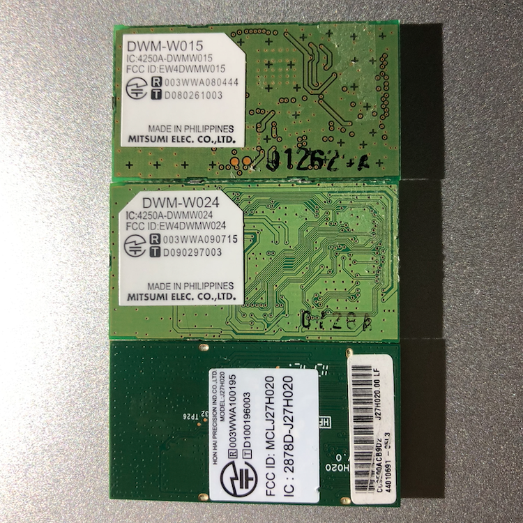

Description
The DSi immediately boots to "an error has occurred."This can happen if the installed WiFi module and firmware are incompatible.
Solution
If you have the DWM-W015 WiFi module, your issue is not caused by the WiFi module. The DWM-W015 version is compatible with all firmwares.If you have the DWM-W024 or J27H020 WiFi modules, you will need to either replace them with a DWM-W015 or upgrade your firmware to v1.4 or higher. These boards are not compatible with anything prior to v1.4.
The WiFi module types are shown below. From top to bottom: DWM-W015, DWM-W024, J27H020 